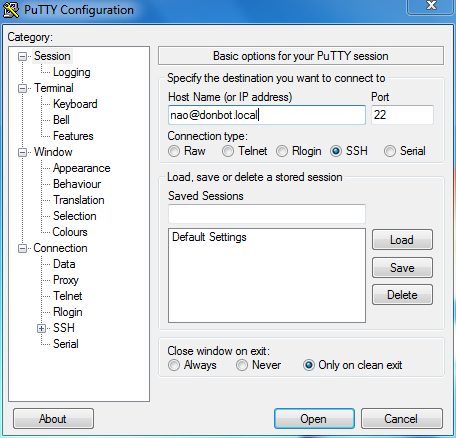
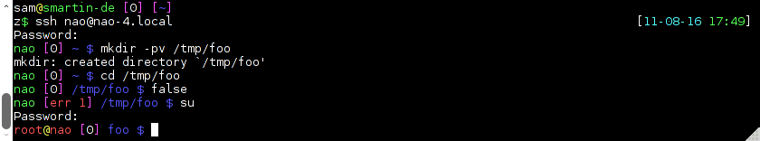

OpenNAO is a GNU/Linux distribution based on Gentoo.
It’s an embedded GNU/Linux distribution specifically developed to fit the NAO robot needs.
OpenNAO provides numbers of programs and libraries, among these, all the required one by NAOqi, the piece of software giving life to the robot.
This page presents miscellaneous tips about the OpenNAO embedded OS.
The main user is nao, and like any GNU/Linux system, there is the super-user root.
By default, passwords are usernames. So, changing user to root using the su command will request the password root
Logging in as root over ssh is now disabled. However the su command remains available.
We recommend to change the nao‘s password using the web page.
| User | Password | Description |
|---|---|---|
| nao | nao | default account |
| root | root | administrator account |
OpenNAO OS provides and runs numerous programs, among these:
To login on your NAO, get its IP address pushing its torse button, then connect to your NAO over ssh:
using putty:
in a Linux terminal, run:
$ ssh nao@192.168.1.10
Note
Refer to OpenNAO user account section for logins and passwords.
The default shell is bash with a custom profile.
When logging in as nao, the prompt now looks like:
<robotname> [<last_command_exit_code>] <current_working_directory> $
When logging in as root:
root@<robotname> [<last_command_exit_code>] <current_working_directory> $
Example:
| Program | Description |
|---|---|
| htop | monitor process activity (many options are available use F1) |
| iftop | monitor network activity |
| ldd | list library dependencies |
| gdb-remote | start a remote gdb server |
sudo is available on OpenNAO. Its usage is limited for shuting down NAO.
$ sudo shutdown -h now
For any others commands requiring root permissions, you will have to use su and authenticate using the root user password.
Now, the available text editors in OpenNAO are:
Start a FTP client on the PC side.
We recommend Filezilla.
Fill in the different fields
For debugging NAOqi C/C++ development, refer to the Debugging C/C++ on the robot section.
For miscellaneous investigation, refer to the Debugging and investigating on the robot section.